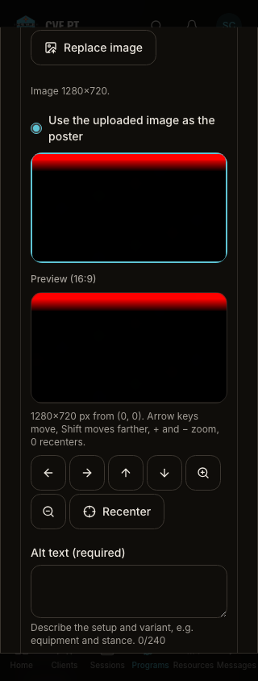
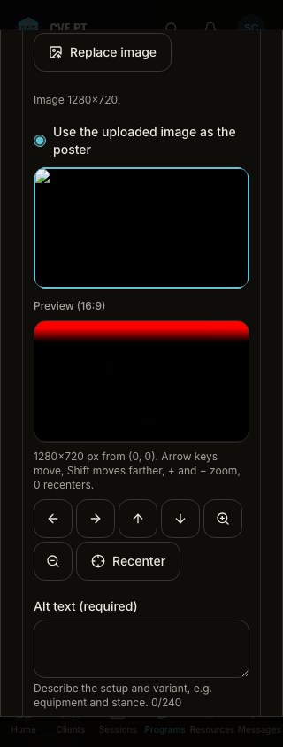
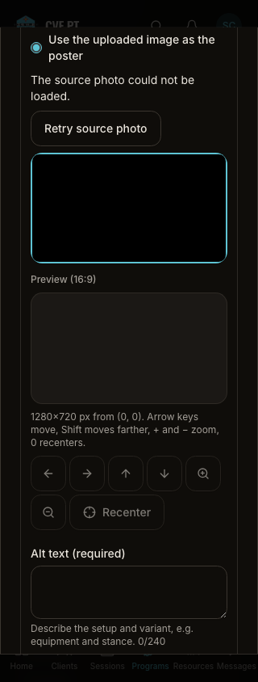
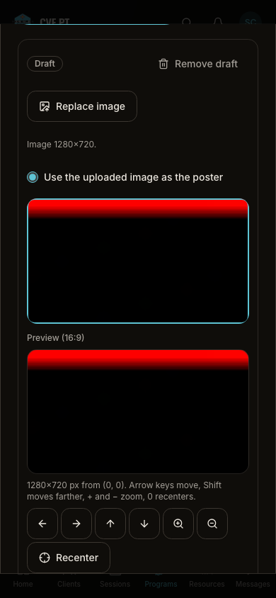
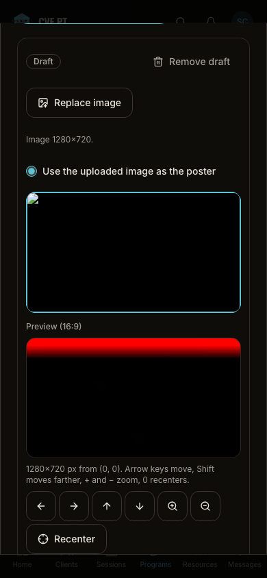
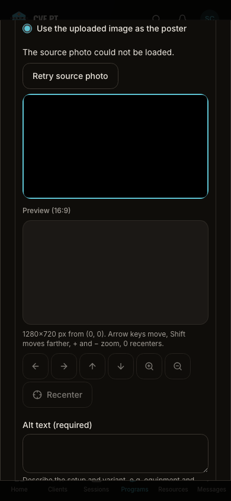

Actual Playwright captures, identical synthetic fixtures and viewports. Baseline archived from5e9d099a; after source matches the frontend in independently reviewed functional commitcb0e5d52. No real exercise instruction or client data. Error state now explains failure, offers retry and disables crop until the image loads. Loaded view remains contained; taller content scrolls vertically. These are implementation comparisons, not owner acceptance or physical-device evidence.






